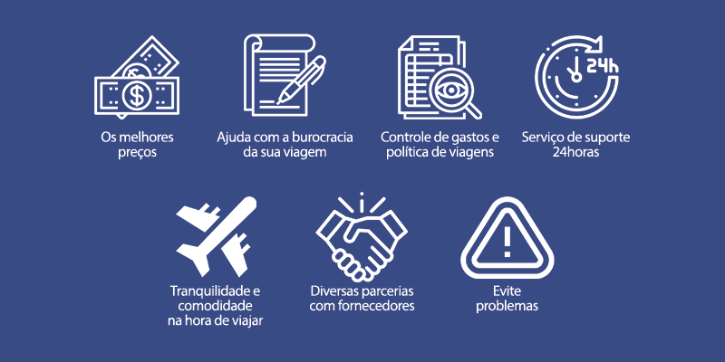

Na Viva Mundo Viagens, somos apaixonados por transformar seus sonhos em experiências reais. Com atendimento personalizado e roteiros cuidadosamente planejados, ajudamos você a explorar o mundo do seu jeito, com conforto, segurança e muita inspiração.
A Viva Mundo Viagens nasceu em 2010 com o sonho de conectar pessoas aos lugares mais incríveis do planeta. O que começou como uma pequena agência de bairro, rapidamente se transformou em referência em viagens personalizadas, graças ao nosso compromisso com a excelência no atendimento e à paixão por explorar o mundo. Hoje, já ajudamos milhares de viajantes a criarem memórias inesquecíveis, sempre com carinho, planejamento e dedicação.
Inspirados por essa visão, decidiram criar uma agência que oferecesse um atendimento humano, próximo e personalizado, capaz de entender o perfil de cada cliente e transformar seus desejos em roteiros sob medida. Assim nasceu a Viva Mundo Viagens: com o propósito de tornar o ato de viajar algo leve, planejado com carinho e cheio de significados.
Colocamos você em primeiro lugar, oferecendo atendimento personalizado e suporte em todas as etapas da sua viagem, garantindo satisfação e tranquilidade.
Nos preocupamos com o impacto ambiental e cultural, promovendo práticas responsáveis que ajudam a preservar os destinos para as próximas gerações.
Nosso entusiasmo por explorar novos lugares nos motiva a criar roteiros autênticos e inspiradores, compartilhando essa paixão com nossos clientes.
Diretor Executivo: Responsável por liderar a empresa, definir estratégias e garantir que todos os setores estejam alinhados com a missão da Viva Mundo Viagens.
Gerente de Atendimento: Cuida do relacionamento com os clientes, garantindo um suporte eficiente e personalizado em todas as etapas da viagem.
Consultor de Viagens: Especialista em destinos, ajuda a criar roteiros sob medida, combinando os desejos dos clientes com as melhores opções disponíveis.
Coordenador de Marketing: Desenvolve campanhas criativas para divulgar a agência, além de gerenciar as redes sociais e promover a marca Viva Mundo Viagens.